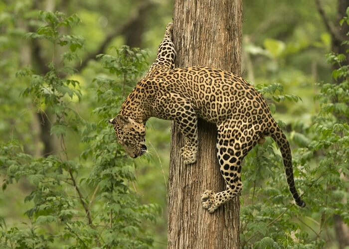
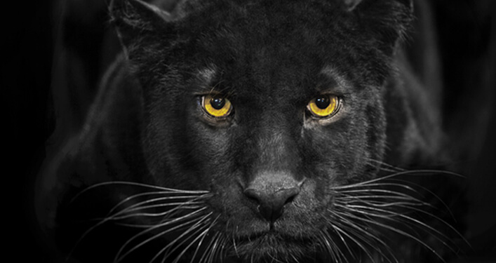
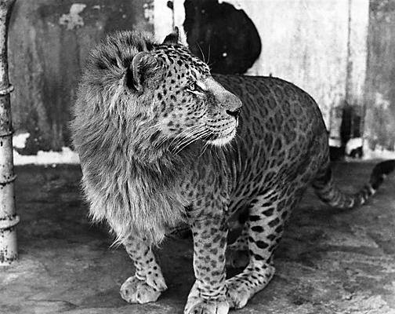
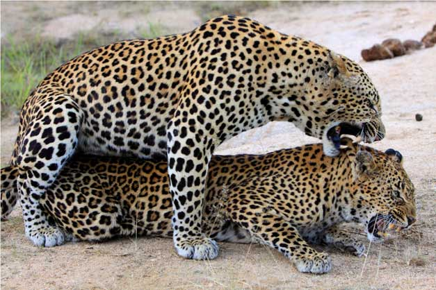
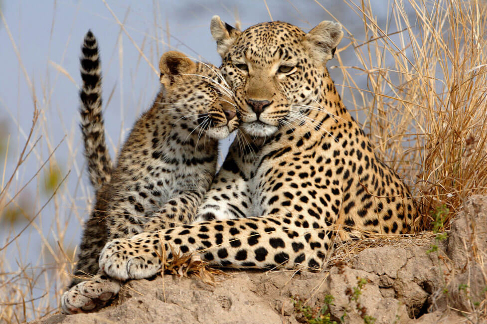
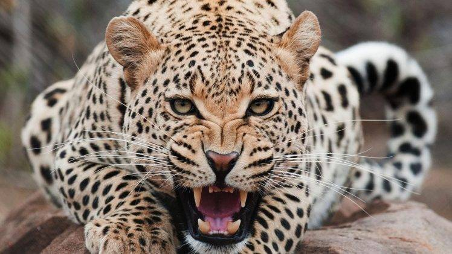

Le léopard (Panthera pardus) / l ɛ p ər d / est l’une des cinq espèces du genre Panthera, un membre des félidés. Le léopard est présent en Afrique subsaharienne et dans certaines régions d’Asie et est classé Vulnérable sur la Liste rouge de l’UICN car les populations de léopards sont menacées par l’extinction. La fragmentation de leur habitat en est responsable dans de grandes parties de leur répartition mondiale. À Hong Kong, Singapour, le Koweït, la Syrie, la Libye, la Tunisie et plus probablement au Maroc, les populations de léopards ont déjà disparu.
Les enregistrements contemporains suggèrent que le léopard se produit dans seulement 25% de son éventail global historique. Les léopards sont chassés illégalement, et leurs parties du corps sont introduites clandestinement dans le commerce de la faune pour des pratiques médicinales et de décoration.
Comparé aux autres membres de Felidae, le léopard a des jambes relativement courtes et un corps long avec un grand crâne. Il est similaire en apparence au jaguar, mais a un physique plus petit et plus léger. Sa fourrure est marquée de rosettes semblables à celles du jaguar, mais les rosettes du léopard sont plus petites et plus denses, et n’ont généralement pas de taches centrales comme chez les jaguars.
Les léopards et les jaguars mélanistes sont connus sous le nom de panthères noires. Le léopard se distingue par sa fourrure bien camouflée, comportement opportuniste de chasse, régime général et force (qu’il utilise pour déplacer les carcasses lourdes dans les arbres), ainsi que sa capacité à s’adapter à divers habitats allant de la forêt tropicale à la steppe, y compris les zones arides et montagneuses, et sa vitesse jusqu’à 58 kilomètres par heure (36 mi / h).
Caractéristiques
Le léopard est un gros chat distingué par son corps robuste et ses membres musclés mais relativement plus courts, une large tête et un pelage couvert de taches disposées en rosettes. Les mâles mesurent de 60 à 70 cm à l’épaule, tandis que les femelles mesurent de 57 à 64 cm. La longueur de la tête et du corps est généralement comprise entre 90 et 190 cm. Alors que les mâles pèsent entre 37 et 90 kg (82 et 198 lb), les femelles pèsent entre 28 et 60 kg (62 et 132 lb); ces mesures varient géographiquement. Le poids maximal enregistré pour un léopard est de 96,5 kilogrammes (213 lb). Sexuellement dimorphes, les mâles sont plus gros et plus lourds que les femelles.

Fondamentalement jaune pâle à brun jaunâtre ou doré (sauf pour les mélanistiques), le pelage est tacheté en rosettes; ces taches se fanent vers le bas ventre blanc, l’intérieur et les parties inférieures des jambes. Les rosettes sont les plus visibles sur le dos. Le motif des rosettes est unique à chaque individu. Les jeunes ont la fourrure laineuse, et apparaissent sombres en raison des taches densément arrangées. La queue à pointe blanche, de 60 à 100 centimètres de long, blanche au-dessous, présente des rosettes sauf vers la fin, où les taches forment des bandes incomplètes.
La texture et la couleur de la fourrure varient selon le climat et la géographie. les léopards dans les forêts sont plus sombres que ceux des déserts. Les poils de garde (la couche de poils qui protègent les poils basaux) sont les plus courts (3-4 millimètres) sur le visage et la tête, et augmentent en longueur vers les flancs et les parties inférieures ( 25-30 millimètres). La fourrure est généralement douce et épaisse; sur les parties inférieures elle est nettement plus douce que celle sur le dos. Quelques variations géographiques ont été notées dans la couleur et la texture de la fourrure. Les léopards dans les forêts ont tendance à être plus sombres que ceux des déserts; la fourrure tend à s’allonger dans les populations vivant dans les climats plus froids. Les rosettes, circulaires chez les populations d’Afrique de l’Est, tendent à être carrées en Afrique australe et plus grandes chez les populations asiatiques. Leur pelage jaune a tendance à être plus pâle et de couleur crème dans les populations du désert, plus gris dans les climats plus froids, et d’une teinte dorée plus sombre dans les forêt tropicales.
Le léopard est souvent confondu avec le guépard; Cependant, le guépard est marqué avec de petites taches rondes au lieu des plus grandes rosettes. En outre, le léopard n’a pas les traits lacrymaux caractéristiques du guépard. D’autres espèces semblables sont le léopard nébuleux et le jaguar. Le léopard nébuleux peut être distingué par les «nuages» diffus de taches comparés aux rosettes plus petites et distinctes du léopard, aux jambes plus longues et à la queue plus mince. Le jaguar a des rosettes qui ont typiquement des taches en leur sein, tandis que celles des léopards ne l’ont pas souvent. De plus, le jaguar a des coussinets plus larges et plus arrondis et un crâne plus large.
Coloration des variantes
Les léopards mélanistes et les jaguars mélanistes sont connus comme des “panthères noires”. Le Pseudo-mélanisme se produit également chez les léopards. Le mélanisme chez les léopards est hérité comme un trait relativement récessif à la forme tachetée. Le croisement chez les léopards mélaniques produit une taille de portée beaucoup plus petite que celle produite par les appariements normaux.

La panthère noire est commune dans la forêt équatoriale de la péninsule malaise et la forêt tropicale humide sur les pentes de certaines montagnes africaines telles que le Mont Kenya. Entre janvier 1996 et mars 2009, des léopards d’Indochine ont été photographiés dans 16 sites de la péninsule malaise dans un effort d’échantillonnage de plus de 1000 nuits de pièges photographiques. Sur les 445 photographies de léopards mélaniques, 410 provenaient de sites d’étude au sud de l’ Isthme de Kra, où la morphologie non mélanique n’a jamais été photographiée. Ces données suggèrent la fixation proche de l’allèle sombre dans la région. Le temps prévu pour la fixation de cet allèle récessif dû à la dérive génétique variait à elle seule d’environ 1100 ans à environ 100 000 ans. Le Pseudo-mélanisme a été également répertorié chez les léopards.
Les léopards présentant un érythème ont été très rarement répertoriés. Cette forme est connue sous le nom de léopard ‘strawberry’ en raison de sa coloration, causée par une condition génétique mal comprise qui provoque une surproduction de pigments rouges ou une sous-production de pigments foncés. Une revue de littérature a montré qu’il y a cinq disques historiques de l’Inde, et sept cas supplémentaires de l’Afrique du Sud au cours des deux dernières décennies, l’un d’entre eux photographié dans la réserve de chasse de Madikwe en Afrique du Sud .
Les différents types de léopards:
Après la première description de Linné, 27 sous-espèces de léopards ont été décrites par des naturalistes entre 1794 et 1956. Depuis 1996, seulement huit sous-espèces ont été considérées valides sur la base de l’analyse mitochondriale. Une analyse ultérieure a révélé une neuvième sous-espèce valide, le léopard d’Arabie. Les grandes sous-espèces, dans lesquelles les mâles pèsent jusqu’à 91 kg (201 lb), sont le léopard sri-lankais et le léopard d’Anatolie. De tels léopards plus grands habitent des régions qui manquent de tigres et de lions, de sorte que les léopards sont au sommet de la chaîne alimentaire sans restriction concurrentielle de la part de grandes proies.
Les neuf sous-espèces reconnues par l’ Union internationale pour la conservation de la nature (UICN) sont résumées dans la liste suivante:
1 – Léopard d’Afrique
Le Léopard d’Afrique vit en Afrique subsaharienne et est la sous-espèce léopard la plus répandue.
- Afrique du Nord : éteinte en Algérie , en Libye et en Tunisie ; une population relique au Maroc et au sud-est de l’ Egypte.
- Afrique de l’Ouest : Bénin , Burkina Faso , Ghana , Guinée , Guinée-Bissau , Côte d’Ivoire , Libéria , Mali , Mauritanie , Niger , Nigéria , Sénégal , Sierra Leone , Togo.
- Afrique de l’Est : Burundi , Djibouti , Érythrée , Éthiopie , Kenya , Tanzanie , Somalie , Soudan du Sud , Soudan , Rwanda , Ouganda.
- Afrique centrale : Cameroun , République centrafricaine , Tchad , République démocratique du Congo , Gabon , République du Congo.
- Afrique australe : Angola , Botswana , Malawi , Mozambique , Namibie , Afrique du Sud , Swaziland, Zambie et Zimbabwe.

2 – Léopard indien
Le Léopard indien est originaire du sous-continent indien : Inde , Népal , Bhoutan , Pakistan et Bangladesh .

3 – Panthère de Java
La Panthère de Java est la seule sous-espèce originaire d’Indonésie et vit sur Java. Elle est en danger critique.

4 – Léopard d’Arabie
Le Léopard d’Arabie est la plus petite sous-espèce léopard; les femelles adultes pèsent environ 18 kg (40 lb). Il est originaire de la péninsule arabique : Arabie saoudite, Oman, Yémen, Koweït, Émirats arabes unis, Palestine, Jordanie , Liban et Syrie . Il est considéré comme disparu dans la péninsule du Sinaï.

5 – Léopard d’Anatolie / Panthère de Perse
Les populations de léopards persistent dans l’est de la Turquie, le Caucase, la Géorgie, l’Arménie, le sud de la Russie, l’Azerbaïdjan, le Turkménistan, l’Ouzbékistan, l’Afghanistan, l’Irak et le nord de l’Iran.
Dans le sud-ouest de la Turquie, le léopard est éteint. Le léopard du Baloutchistan a probablement évolué dans le sud de l’Iran, dans le sud de l’Afghanistan et dans le sud-ouest du Pakistan, étant séparé de la population du nord par les déserts de Dasht-e Kavir et de Dasht-e Lut.

6 – Léopard de Chine du Nord
Il est originaire du centre et du nord de la Chine, où il ne reste aujourd’hui que de petites populations isolées.

7 – Léopard de l’Amour
Il vit dans les régions froides de l’ Extrême-Orient russe et de la Chine du Nord-Est et est en danger critique d’extinction . Il est actuellement éteint dans la péninsule coréenne.

8 – Léopard d’Indochine
Il habite l’Asie du Sud-Est continentale, y compris le Myanmar , la Thaïlande , la Malaisie , le Cambodge, le Laos , le Vietnam et la Chine du Sud.

9 – Panthère de Ceylan
Elle est originaire du Sri Lanka .

Evolution et génétique
On pense que le dernier ancêtre commun des espèces Panthera et Neofelis est apparu il y a environ 6,37 millions d’années. La panthère nébuleuse été le première à diverger du reste de la lignée Panthera , suivi par le léopard des neiges. On pense que le genre Panthera est apparu en Asie, d’où ils ont ensuite émigré en Afrique. Le clade du tigre et du léopard des neiges a divergé du reste de Panthera il y a environ 2,9 millions d’années.
Le nombre diploïde de chromosomes chez le léopard est 38, le même que chez tout autre félin, sauf pour l’ocelot et le margay, dont le nombre diploïde de chromosomes est de 36. Les chromosomes comprennent quatre acrocentriques, cinq métacentriques, sept submétacentriques et deux paires télocentriques.
Le léopard fait partie de la lignée Panthera, l’une des huit lignées de Felidae. Cette lignée comprend les espèces de Panthera et de Neofelis . La panthère nébuleuse a divergé d’abord de la lignée, suivi par un clade composé du tigre et du léopard des neiges. Les branchements subséquents ont commencé il y a deux ou trois millions d’années, mais les détails en sont contestés. Les résultats des études phylogénétiques basées sur l’analyse de l’ADN et de l’ADN mitochondrial ont montré que le léopard est un taxon frère d’un clade de Panthera composé du lion et du jaguar. Cependant, les résultats d’une étude phylogénétique différente ont révélé un échange entre le léopard et le jaguar dans le cladogramme. Les résultats d’une analyse phylogénétique de 2001 des sécrétions chimiques parmi les chats ont également suggéré que le léopard est étroitement lié au lion.
Des fossiles d’ancêtres du léopard ont été trouvés en Afrique de l’Est et en Asie du Sud, remontant au Pléistocène entre 2 et 3,5 millions d’années. On pense que le léopard moderne a évolué en Afrique il y a 0,5 à 0,8 million d’années et qu’il a rayonné à travers l’Asie il y a 0,2 à 0,3 million d’années.
En Europe, le léopard est connu au moins depuis le Pléistocène. Des os fossiles et des dents datant du Pliocène ont été trouvés à Perrier en France, au nord-est de Londres et à Valdarno (Italie). Des fossiles similaires remontant au pléistocène ont été excavés principalement dans des loess et des grottes sur 40 sites du continent: près de Lisbonne, près de Gibraltar et de la province de Santander au nord de l’Espagne, à plusieurs sites en France, Suisse, Italie, Autriche , Allemagne, dans le nord jusqu’à Derby en Angleterre, à l’est de Přerov en République tchèque, le Baranya dans le sud de la Hongrie, et dans la grotte Biśnik dans le centre-sud Pologne.
Les léopards pléistocènes d’Europe peuvent être divisés en quatre sous-espèces subséquentes. La première sous-espèce léopard européenne P. p. begoueni est connu depuis le début du Pléistocène précoce et a été remplacé il y a environ 0,6 million d’années par P. p. sickenbergi , qui à son tour a été remplacé par P. p. antiqua il y a environ 0,3 million d’années. Plus récemment, le léopard européen de l’ère glaciaire ( P. p. Spelaea ) est apparu au début du Pléistocène supérieur et a survécu jusqu’à environ 24 000 ans dans plusieurs régions d’Europe. Des fossiles pléistocènes ont également été mis au jour dans l’archipel japonais .
Hybrides
Le croisement entre le léopard et les autres membres du Panthera a été documenté. En 1953, une lionne et un léopard mâle ont été accouplés dans le parc Hanshin à Nishinomiya, au Japon. La première portée de ce couple est née le 2 novembre 1959, composée d’un mâle et d’une femelle. Une autre portée est née en 1961, dans laquelle tous les nouveaux-nés ont été repérés plus gros que le petit d’un léopard. L’hybride est connu sous le nom de “léopon”. Des tentatives infructueuses ont été faites pour accoupler un léopard avec une tigresse.

Bien que les lions et les léopards puissent entrer en contact en Afrique subsaharienne, ils ne sont généralement pas connus pour se croiser naturellement. Cependant, il y a eu des rapports anecdotiques de félidés plus grands que le guépard mais plus petits que le lion, avec un visage de lion, de la République centrafricaine, du Kenya, du Rwanda et de l’Ouganda. Cet animal, connu sous le nom de Marozi et sous plusieurs autres noms, est couvert de taches grisâtres ou de rosettes sur le dos, les flancs et les pattes. Cependant, il n’y a eu aucune observation confirmée du marozi depuis les années 1930.
Le pumapard est aussi un animal hybride résultant d’un accouplement entre un léopard et un puma (un membre du genre Puma , pas le genre Panthera ). Trois ensembles de ces hybrides ont été élevés à la fin des années 1890 et au début des années 1900 par Carl Hagenbeck dans son parc animalier à Hambourg, en Allemagne. Alors que la plupart de ces animaux n’ont pas atteint l’âge adulte, l’un d’entre eux a été acheté en 1898 par le zoo de Berlin. Un hybride similaire dans le zoo de Berlin acheté à Hagenbeck était un croisement entre un léopard mâle et un puma féminin. Le pumapard est caractérisé par un corps long comme le puma, mais avec des jambes plus courtes. L’hybride est en général un nain, plus petit que l’un ou l’autre des parents. Le manteau est diversement décrit comme sable, fauve ou grisâtre avec des rosettes marron ou fanées.
Distribution et habitat
Le léopard a la plus grande distribution de tous les chats sauvages, se reproduisant largement en Afrique ainsi qu’en Asie orientale et méridionale, bien que les populations aient montré une tendance à la baisse, et sont fragmentées en dehors de l’Afrique sub-saharienne. En Afrique subsaharienne, l’espèce est encore nombreuse et prospère même dans des habitats marginaux où d’autres grands félins ont disparu, bien qu’il existe un potentiel considérable de conflit homme-léopard en raison des léopards qui attaquent le bétail. Les populations en Afrique du Nord peuvent être éteintes. Les données sur leur distribution en Asie ne sont pas cohérents. Les populations du sud-ouest et de l’Asie centrale sont petites et fragmentées; dans le nord-est, ils sont en danger critique. Dans le sous-continent indien, en Asie du Sud-Est et en Chine, les léopards sont encore relativement abondants. De l’ensemble de l’espèce, ses effectifs sont supérieurs à ceux des autres espèces de Panthera, qui sont tous confrontés à des problèmes de conservation plus graves.

Les léopards sont exceptionnellement adaptables, bien qu’associés principalement à la savane et à la forêt tropicale. Les populations prospèrent partout dans l’aire de répartition des espèces, où les prairies, les forêts et les forêts riveraines demeurent en grande partie non perturbées. Dans l’Extrême-Orient russe, ils habitent des forêts où les températures hivernales atteignent un minimum de -25 ° C (-13 ° F). Ils survivent également dans certaines des forêts les plus humides du monde et même les bords du désert semi-arides.
Les léopards d’Asie occidentale et centrale évitent les déserts et les zones à forte couverture neigeuse et les zones proches des centres urbains. En Inde, les populations de léopards vivent parfois assez près des humains et même dans des zones semi-développées. Bien que parfois adaptable aux perturbations humaines, les léopards ont besoin de proies pour rester en bonne santé et une couverture végétale appropriée pour la chasse.
Ecologie et comportement
Les léopards, comme les lions et les tigres, ont tendance à être nocturnes (actifs surtout la nuit). Cependant, les léopards dans les forêts ouest-africaines ont été observés chasser pendant le crépuscule, quand leurs proies sont actifs; les modèles d’activité peuvent même varier selon la saison. Les léopards sont généralement actifs principalement du crépuscule jusqu’à l’aube, et se reposent pendant la majeure partie du jour et pendant quelques heures la nuit sur les branches d’arbres. On a observé des léopards marchant 1-25 kilomètres en une seule nuit; ils peuvent même errer jusqu’à 75 kilomètres s’ils sont dérangés.
Les léopards sont connus pour leur capacité à grimper et ont été observés se reposant sur des branches d’arbres pendant la journée, traînant leurs proies abattues pour les manger, et descendant des arbres la tête la première. Ils sont de puissants nageurs, bien qu’ils ne soient pas aussi disposés à nager que d’autres grands félins, comme le tigre. Ils sont très agiles et peuvent courir à plus de 58 kilomètres par heure (36 mi / h), sauter à plus de 6 mètres (20 pieds) horizontalement et sauter jusqu’à 3 mètres (9,8 pieds) verticalement.
Reproduction et cycle de vie
Selon la région, les léopards peuvent s’accoupler toute l’année. En Mandchourie et en Sibérie, ils s’accouplent en janvier et février. Le cycle œstral dure environ 46 jours et la femelle est généralement en chaleur pendant 6-7 jours. La gestation dure de 90 à 105 jours. 2-4 petits naissent habituellement dans une portée. La mortalité des petits est estimée entre 41 et 50% la première année.

Les femelles accouchent dans une caverne, une crevasse parmi des rochers, un arbre creux, ou un fourré pour faire une tanière. Les petits naissent les yeux fermés, ils les ouvrent de quatre à neuf jours après la naissance. La fourrure des jeunes a tendance à être plus longue et plus épaisse que celle des adultes. Leur pelage est également plus gris avec des taches moins définies. Vers l’âge de trois mois, les jeunes commencent à suivre la mère à la chasse. À l’âge d’un an, les jeunes léopards peuvent probablement se débrouiller seuls, mais restent avec la mère pendant 18 à 24 mois.

La durée de vie moyenne typique d’un léopard est comprise entre 12 et 17 ans. Le léopard tacheté le plus âgé enregistré était une femelle nommée Roxanne vivant en captivité au McCarthy’s Wildlife Sanctuary dans The Acreage, dans le comté de Palm Beach, en Floride. Elle est décédée le 8 août 2014 à l’âge de 24 ans, 2 mois et 13 jours. Cela a été vérifié par le Guinness World Records. Auparavant, le léopard le plus âgé enregistré était une femelle nommée Bertie vivant en captivité au zoo de Varsovie. Elle est décédée en décembre 2010 à l’âge de 24 ans. Le plus âgé des léopards enregistré était Cezar, âgé de 23 ans. Il vivait également au zoo de Varsovie et était le compagnon de vie de Bertie.
Vie sociale
Le léopard est solitaire et territorial, comme le sont plusieurs autres félidés; les individus ne s’associent sensiblement que pendant la saison d’amours, bien que les mères puissent continuer à interagir avec leur progéniture même après le sevrage. Des mères ont été observées partageant leurs proies avec leurs progénitures quand elles ne peuvent pas obtenir de repas. Dans le parc national Kruger, la plupart des léopards ont tendance à se tenir à 1 kilomètre (0.62 mi) de distance les uns des autres. Les pères peuvent parfois interagir avec leurs partenaires et leurs petits et, exceptionnellement, cela peut aller au-delà de deux générations. Les rencontres agressives sont rares, typiquement limitées à la défense des territoires contre les intrus. Dans une réserve sud-africaine, un léopard a été blessé lors d’une bataille territoriale entre deux mâles pour une carcasse. Quelques cas de cannibalisme ont été signalés.

Les léopards communiquent entre eux en produisant un certain nombre de sons et vocalisations, y compris les grognements, les grondements, les miaulements et les ronronnements. Le rugissement des léopards se compose principalement de grognements et est également connu sous le nom de “sciage”, ayant été décrit comme ressemblant au son du sciage de bois. Les plus jeunes sont connus pour appeler leur mère avec un bruit d’urr-urr.
Les mâles occupent des territoires qui chevauchent souvent quelques territoires féminins plus petits, probablement comme stratégie pour améliorer l’accès aux femelles. Une analyse du collier radio en Côte d’Ivoire a trouvé un territoire féminin entièrement enfermé par un mâle. Les femelles vivent avec leurs petits dans des territoires qui se chevauchent de manière extensive – probablement en raison de l’association entre les mères et leur progéniture. Il peut y avoir quelques autres territoires fluctuants, appartenant à de jeunes individus. Il n’est pas clair si les territoires masculins ont tendance à se chevaucher autant que ceux des femelles. Les individus essaieront de chasser les intrus du même sexe.
Une étude sur les léopards dans les terres agricoles namibiennes a montré que la taille des territoires n’était pas significativement affectée par le sexe, les régimes pluviométriques ou la saison; elle a conclu que plus la disponibilité des proies est élevée dans une zone, plus la densité de population des léopards est grande et plus la taille des territoires est petite, mais les territoires tendent à se développer s’il y a interférence humaine (particulièrement élevée dans la zone d’étude). Les tailles territoriales varient géographiquement; elles peuvent être aussi petites que 33-38 kilomètres carrés pour les mâles et 14-16 kilomètres carrés pour les femelles dans les forêts et les terrains rocailleux (comme dans le parc national de Serengeti ou de Kruger ), ou aussi grand que 451 kilomètres carrés pour les mâles et 188 kilomètres carrés pour les femelles dans le nord-est de la Namibie (ils pourraient être encore plus grands dans les déserts et les régions montagneuses). Les territoires enregistrés au Népal, 48 kilomètres carrés pour les mâles et 5-7 kilomètres carrés pour les femelles, sont inférieurs à ceux généralement observés en Afrique.
Chasse et alimentation
Le léopard dépend principalement de son sens aigu de l’ouïe et de sa vision pour la chasse. La chasse est principalement une activité nocturne dans la plupart des régions, bien que les léopards dans les forêts occidentales africaines et le parc national de Tsavo aient été observés chassant par jour. Il traque sa proie et essaie de s’approcher le plus près possible, typiquement à moins de 5 m de sa cible, et finira par s’y accrocher avec ses pattes avant et la tuer par suffocation. Les petites proies sont tuées avec une morsure à l’arrière du cou, tandis que les animaux plus gros sont tenus fortement par la gorge et étranglés.

Les petites proies sont mangées immédiatement, tandis que les plus grosses carcasses sont traînées sur plusieurs centaines de mètres et mises en cachette en toute sécurité dans les arbres, les buissons ou même les grottes pour être consommées plus tard. La façon dont la proie est stockée dépend de la topographie locale et des préférences individuelles; Alors que les arbres sont préférés dans le parc national Kruger, les buissons sont préférés dans le terrain plat du Kalahari. Il est capable de prendre de grandes proies en raison de son crâne massif et de ses muscles puissants de mâchoire, et donc assez fort pour traîner des carcasses plus lourdes que lui-même dans les arbres; un spécimen a été vue transporter une jeune girafe de près de 125 kg (276 lb), jusqu’à 5,7 m (19 pi) dans un arbre. Les proies sont mises en cache jusqu’à 2 km de distance.

Le léopard est un carnivore qui préfère les proies de taille moyenne avec une masse corporelle allant de 10 à 40 kg (22-88 lb). Les proies de cette catégorie de poids ont tendance à se trouver dans un habitat dense et à former de petits troupeaux. Les espèces qui préfèrent les zones ouvertes et qui ont développé des stratégies anti-prédatrices significatives sont moins préférées. Plus de 100 espèces de proies ont été enregistrées dont: l’Impala, la gazelle de Thomson, le céphalophe, le steenbok, le guib harnaché, le phacochère, le chevrotain d’eau, le gnou bleu, le sitatunga, l’antilope pygmée de Bates, l’aardvark, le nyala, et les kudu en Afrique, et le chital, le muntjac, le sambar, l’antilope à quatre cornes, le cerf, le tahr du Nilgiri, le gaur et le cochon sauvage en Asie. Parmi les proies d’espèces primates: le Colobus , le Mangabey , le Cercopithecus , le Langur et, plus rarement, le gorille et le babouin. Parmi les petits mammifères, on compte le chacal à dos noir, le renard du Cap, la civette africaine et les genêts, le lièvre, l’hyrax. Les proies aussi lourdes que 550 kilogrammes comme les girafes sont chassées si les grands carnivores tels que les lions ou les tigres sont absents. La plus grande proie tuée par un léopard aurait été un éland mâle de 900 kg (2.000 livres). L’analyse de la présence de léopard dans le Parc National de Taï a révélé que les primates sauf le chimpanzé et le potto sont les principales proies du léopard pendant la journée.
Une étude menée dans la réserve de Wolong en Chine a démontré la variation de l’alimentation des léopards au fil du temps; Au cours de sept années, la couverture végétale a reculé, et les animaux sont passés opportunément de consommer principalement des cerfs touffés à la poursuite des rats de bambou et d’autres proies plus petites. Une étude a estimé les taux de consommation quotidiens moyens à 3,5 kg (7,7 lb) pour les mâles et 2,8 kg (6,2 lb) pour les femelles.Une étude sur les léopards dans le sud du Kalahari a montré que les besoins en eau sont satisfaits par les fluides corporels de la proie et les plantes succulentes; ils boivent de l’eau tous les deux ou trois jours, et se nourrissent rarement de plantes riches en humidité telles que les concombres gemsbok (Acanthosicyos naudinianus), le melon tsamma (Citrullus lanatus) et l’herbe sourde du Kalahari (Schmidtia kalahariensis). Quelques cas de cannibalisme ont été répertoriés.
Ennemis et concurrents
Léopards doivent concurrencer pour la nourriture et un abri avec d’autres grands prédateurs tels que des tigres, des lions, des guépards, des hyènes tachetées, hyènes rayées, hyènes brunes, jusqu’à cinq espèces d’ours et à la fois les chiens sauvages asiatiques et africains. Ces animaux peuvent voler les proies du léopard, dévorer ses jeunes ou même tuer des adultes. Les léopards côtoient ces autres grands prédateurs en chassant différents types de proies et en évitant les zones fréquentées. Les léopards peuvent également se retirer d’un arbre face à l’agression directe d’autres grands carnivores, mais les léopards ont été vus faire cela soit pour se nourrir ou tuer des concurrents comme le chacal à dos noir, le caracal, le chat sauvage africain, les lions, les guépards, les hyènes et les chiens sauvages.

Le partitionnement des ressources se produit lorsque les léopards partagent leur portée avec les tigres. Les léopards ont tendance à prendre des proies plus petites, généralement moins de 75 kg (165 lb), où les tigres sont présents. Dans les zones partagées entre le léopard avec le tigre, la coexistence n’est pas la règle générale. La densité moyenne du léopard a diminué significativement (de 9,76 à 2,07 animaux par 100 km carrés) tandis que la densité moyenne des tigres a augmenté (de 3,31 animaux / 100km2 à 5,81 animaux / 100km2) de 2004 à 2008 dans le Parc national Rajaji en Inde suite à la réinstallation des pasteurs hors du parc. Là, les deux espèces ont un chevauchement alimentaire important et une augmentation de la population de tigres a entraîné une forte diminution de la population de léopards et un déplacement du régime du léopard vers de petites proies (de 9% à 36%) et domestiques (de 6,8% à 31,8%).
Dans le parc national de Chitwan au Népal, le tigre du Bengale coexiste avec le léopard d’Inde parce qu’il y a une grande biomasse de proies, une grande proportion de proies est de plus petite taille dans une végétation dense. Ici, les léopards ont tué des proies allant de moins de 25 kg (55 lb) à 100 kg (220 lb) de poids, la plupart des animaux tués dans la fourchette de 25 à 50 kg (55-110 lb); les tigres ont tué plus de proies dans la gamme 50-100 kg (110-220 lb). Il y avait également des différences dans les préférences de micro-habitat du tigre et du léopard individuels suivis sur cinq mois (Décembre à Avril); le tigre fréquentait les espaces et (sauf en février) les zones forestières plus fréquemment, alors que le léopard fréquentait plus récemment des zones brûlées et des zones ouvertes.
Habituellement, quand un tigre commence à tuer des proies dans des sites autrefois fréquentés par les léopards, les léopards ne viennent plus chasser là. Dans les forêts tropicales du parc national de Nagarhole en Inde, les tigres ont sélectionné des proies pesant plus de 176 kg (388 lb), tandis que les léopards ont choisi des proies de 30 à 175 kg (66-386 lb). En forêt tropicale, ils n’évitent pas toujours les grands félins en chassant à des moments différents. Avec des proies relativement abondantes et des différences dans la taille des proies sélectionnées, les tigres et les léopards semblent coexister avec succès sans exclusion compétitive ou hiérarchies de dominance inter-espèces qui pourraient être plus communes à la coexistence du léopard avec le lion dans les habitats de savane. Dans les zones à forte population de tigres, comme dans les parties centrales du parc national de Kanha en Inde, les léopards ne sont pas des résidents permanents.
Au milieu du 20ème siècle, les léopards de l’Amour étaient absents ou très rarement rencontrés dans la région de Primorye de l’ Extrême-Orient russe aux endroits où les tigres de Sibérie erraient. Les enquêtes menées au début du 21ème siècle ont révélé que l’aire de répartition des deux espèces se chevauche dans cette région, en particulier dans les zones protégées où les densités d’ongulés sont élevées et les perturbations humaines sont faibles.
Parfois, les crocodiles du Nil se nourrissent de léopards de tout âge. Un grand léopard adulte a été attrapé et dévoré par un gros crocodile alors qu’il tentait de chasser le long d’une berge dans le parc national Kruger. Les crocodiles de Mugger auraient tué un léopard adulte en Inde. Les Lions réussissent occasionnellement à grimper aux arbres et à aller chercher les léopards. Les léopards sont également connus pour tuer ou se nourrir de lionceaux. Dans le désert du Kalahari, les léopards laissent souvent sa proie pour l’hyène brune, s’ils sont incapable de la déplacer dans un arbre. Des hyènes brunes uniques ont été observées en train de voler les proies des léopards mâles. Les pythons birmans auraient mangé des léopards, et un léopard adulte a été récupéré de l’estomac d’un spécimen de 5.5 m. Deux cas de léopards tuant des guépards ont été signalés en 2014.
Dans certaines régions d’Afrique, les troupes de grandes espèces de babouins (proies potentielles des léopards) vont tuer et parfois manger des jeunes léopards s’ils les découvrent. George Schaller a écrit qu’il avait vu des carcasses de léopard et de gorille, et que les deux avaient des blessures.
Léopards et humains
Les léopards ont été connus par les humains à travers l’histoire, et ont figuré dans l’art, la mythologie et le folklore de nombreux pays où ils ont eu lieu historiquement, comme la Grèce antique, la Perse et Rome. L’utilisation moderne du léopard comme emblème du sport ou d’un blason est beaucoup plus limitée à l’Afrique, bien que de nombreux produits dans le monde aient utilisé ce nom. Pendant l’Empire béninois, le léopard était généralement représenté sur des gravures et des sculptures et était utilisé pour symboliser le pouvoir du roi ou oba; puisque le léopard était considéré comme le roi de la forêt. Les léopards ont également été conservés et paradés comme des mascottes, des totems et des sacrifices aux divinités. En raison de leur association avec les rois en Afrique, la peau de léopard est souvent considérée aujourd’hui comme un symbole de rang aristocratique, les chefs et les leaders l’utilisant comme une partie de leurs insignes traditionnels.

La domestication du léopard a également été enregistrée – plusieurs léopards ont été conservés dans une ménagerie établie par le roi John à la tour de Londres au 13ème siècle; Vers 1235, trois de ces animaux furent donnés à Henri III par l’empereur romain germanique Frédéric II.
Dans les zones protégées de plusieurs pays, des programmes de tourisme animalier et des safaris offrent des observations de léopards dans leur habitat naturel. Alors que les établissements de luxe peuvent se vanter du fait que les animaux sauvages peuvent être vus de près tous les jours, le camouflage du léopard et sa propension à se cacher et à traquer ses proies font que les léopards sont rares. Dans le parc national de Yala au Sri Lanka, les visiteurs ont classé les léopards parmi les animaux les moins visibles du parc malgré leur forte concentration dans la réserve.
En Afrique du Sud, des safaris sont proposés dans la réserve de Sabi Sand. Au Sri Lanka, des visites de la faune sont disponibles dans les parcs nationaux de Yala et de Wilpattu. En Inde, des safaris sont proposés dans les parcs nationaux du Madhya Pradesh et de l’Uttarakhand ainsi que dans le district de Pali, dans l’ouest du Rajasthan.
Attaques aux humains
La plupart des léopards évitent les gens, mais les humains peuvent parfois être ciblés comme proies. La plupart des léopards en bonne santé préfèrent les proies sauvages aux humains, mais les blessés, malades ou en difficulté ou ceux qui manquent de proies régulières peuvent recourir à la chasse aux humains et s’y habituer.

Bien que généralement légèrement plus petit qu’un humain, un léopard adulte est beaucoup plus puissant et facilement capable d’en tuer un. Deux cas extrêmes se sont produits en Inde: le premier léopard, le «léopard de Rudraprayag», a tué plus de 125 personnes; le second, le «Panar Leopard», aurait tué plus de 400 personnes. Tous deux ont été tués par le célèbre chasseur et défenseur de l’environnement Jim Corbett. Les léopards mangeurs d’hommes sont considérés comme audacieux et difficiles à suivre et peuvent s’aventurer près des humains en quête de proies, plus que les lions et les tigres. Auteur et grand chasseur de gibier, Kenneth Anderson avait une expérience avec beaucoup de léopards mangeurs d’hommes, et les a décrits comme beaucoup plus menaçants que les tigres.
Étymologie
Le nom commun « léopard » / l ɛ . p ər d / est un composé grec de λέων leōn (“lion”) et πάρδος pardos (“mâle panthère”). Le nom reflète le fait que dans l’antiquité, un léopard était censé être un hybride d’un lion et d’une panthère. Le mot grec est lié au sanskrit पृदाकु pṛdāku (“serpent”, “tigre” ou “panthère”), et provient probablement d’une langue méditerranéenne, Le nom a été d’abord utilisé au 13ème siècle. D’autres noms vernaculaires pour le léopard incluent graupanther, panther et plusieurs noms régionaux tels que tendwa en Inde. Le terme «panthère noire» fait référence aux léopards avec des gènes mélanistiques . Un terme utilisé pour le léopard en anglais, mais maintenant très rare, est “pard”.
Le nom scientifique du léopard est Panthera pardus . Le nom générique Panthera dérive du latin du grec πάνθηρ ( pánthēr ). Le terme “panthère”, dont la première utilisation enregistrée remonte au 13ème siècle après JC, se réfère généralement au léopard, et moins souvent au couguar et au jaguar . Les origines alternatives suggérées pour Panthera comprennent un mot indo-iranien signifiant “blanc-jaune” ou “pâle”. En sanskrit, cela pourrait être dérivé de पाण्डर pāṇḍara (“tigre”), qui vient à son tour de पुण्डरीक puṇḍárīka (avec le même sens). Le nom spécifique pardus est dérivé du grec πάρδος ( pardos ) (“mâle panthère”).
Taxonomie
Le léopard est l’une des cinq espèces existantes du genre Panthera , qui comprend également le jaguar (P. onca), le lion (P. leo), le léopard des neiges (P. uncia) et le tigre (P. tigris). Ce genre, avec le genre Neofelis forme la sous-famille Pantherinae.
Le léopard a été décrit pour la première fois par le zoologiste suédois Carl Linnaeus dans la 10ème édition de Systema Naturae (1758). Il a nommé le léopard Felis pardus et l’a placé dans le genre Felis avec le chat domestique, le jaguar, le lynx d’Eurasie, le lion, l’ocelot et le tigre. Aux 18èmes et 19èmes siècles, la plupart des naturalistes et des taxonomistes ont suivi son exemple. En 1816, Lorenz Oken propose une définition du genre Panthera, avec un sous-genre Panthera utilisant F. pardus comme une espèce type. La classification d’Oken n’était pas largement acceptée, et Felis ou Leopardus a été utilisé jusqu’au début du 20ème siècle. En 1916, le zoologiste britannique Reginald Innes Pocock a accordé le rang générique Panthera basé sur Panthera pardus en tant qu’espèce type.